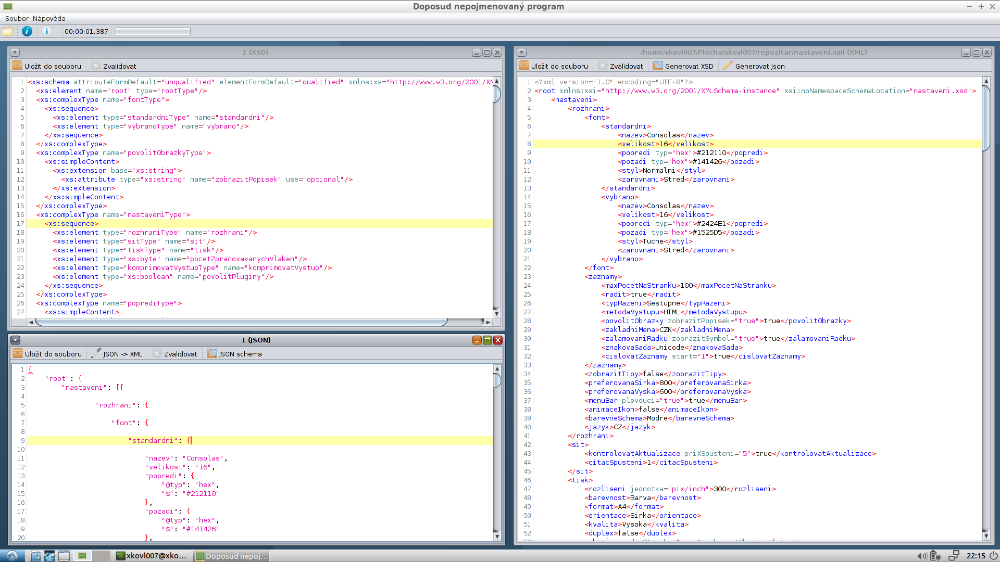

Obsah
Úvod
Tento dokument pojednává o semestrálním projektu pro předmět "Značkovací jazyky", jehož tématem bylo navrhnout nastavení/konfiguraci (smyšlené) aplikace.
Semestrální projekt obsahuje následující soubory:
| Název souboru | Popis souboru |
| popis.html | HTML soubor s popisem tohoto projektu |
| nastaveni.xml | XML soubor obsahující konfiguraci smyšleného počítačového programu |
| nastaveni.xsd | XML schéma výše uvedeného XML souboru |
| xml_to_json.xsl | XML transformační dokument pro převod výše uvedeného XML souboru do JSON souboru |
| nastaveni.json | JSON soubor vygenerovaný pomocí transformačního dokumentu XSL |
| nepojmenovany.png | Snímek obrazovky doposud nepojmenovaného programu |
| popis.tex | LaTeX soubor s popisem projektu |
| popis.pdf | PDF soubor s popisem tohoto projektu vygenerovaný pomocí pdflatex ze souboru "popis.tex" |
| zadani.txt | Zadání tohoto projektu zadané cvičícím/přednášejícím |
| README.md | Soubor obsahující jednoduchý popis repozitáře github |
| LICENSE.md | Soubor obsahující text permisivní licence MIT (pro github) |
Metodika
Nejprve byl navržen XML soubor, ze kterého bylo následně derivováno XML schéma a testován transformační dokument pro převod XML souboru do JSON souboru.
Použité nástroje
Pro vytvoření souborů bylo využito většího množství programů a nástrojů, přičemž jeden program dokonce vznikl samostatně pouze pro zjednodušení práce s tímto projektem.
| Název nástroje | Důvod využití |
| NetBeans | Kontrola syntaxe, transformace XML, pretty printing |
| Doposud nepojmenovaný program | Kontrola syntaxe, kontrola správnosti JSON výstupu, podpora při tvorbě XML schématu, ověření XML schématu, kontrola html, transformace, pretty printing |
| Kate | Kontrola syntaxe, html, LaTeX |
| Bluefish | ditto |
| wc (word counter) | Program pro počítání znaků/řádek na Unixových operačních systémech |
| pdflatex | Generování výstupního PDF souboru z vstupního LaTeX souboru |
|  |
| Obr. 1: Snímek obrazovky doposud nepojmenovaného programu |
{kind=link}
Popis elementů a atributů
Zamýšlená konfigurace aplikace se zaměřuje na tisk, velikost oken, síť a určitý druh záznamů.
Zde je uveden výčet některých elementů a atributů, které se vyskytují v XML souboru, jeho schématu a vygenerovaném JSON souboru.
XML obsahuje jeden kořenový element "root", do kterého je vnořeno celkem 5 konfigurací (ukázkových záznamů), jak je požadováno v zadání. Do samotné konfigurace jsou vnořeny další elementy, některé elementy mají ještě zadány atributy.
Element "rozhrani", který je vnořen do elementu "nastaveni", představuje konfiguraci (hypotetického) grafického rozhraní, které je zobrazeno koncovému uživateli.
V elementu "rozhrani" se nachází element "font", který nastavuje vzhled písma ("standardni" a "vybrano"), tedy dvě konfigurace, pokud je text nevybrán a vybrán; u sub-elementu "popredi" a "pozadi" je atributem uvedeno, v jakém formátu je zadaná hodnota barvy uvedena (příklad: hex: #161616 nebo dec: 100,50,100).
Dalším sub-elementem v "rozhrani" je i element "zaznamy", který může představovat seznam záznamů, které jsou uživateli představovány.
"zobrazitTipy" nastavuje, zda se uživateli po startu budou zobrazovat (nepříjemné) tipy programu.
"preferovanaSirka" a "preferovanaVyska" určují, jak velké bude okno aplikace při startu.
"menuBar" označuje lištu nástrojů a zda má tato lišta být zobrazena.
"nastaveni" dále
obsahuje element "sit", který určuje, jakým způsobem bude program pracovat se
sítí; v tomto případě je k dispozici sub-element, který určuje, zda-li se budou
kontrolovat aktualizace a atribut určuje, jak často tomu tak bude (kolikáté
spuštění aplikace), přičemž čítač spuštění aplikace je uveden v dalším elementu,
v tomto případě je tedy při každém otevření aplikace soubor s nastavením nutné pokaždé
aktualizovat, což v některých případech nemusí být žádoucí, v takovém případě je
možné čítač odstranit a nechat pouze boolean hodnotu, jestli má aplikace být
aktualizována při každém spuštění.
Element "tisk" určuje nastavení tiskárny
při posílání výstupu na tiskárnu.
"rozliseni" je uváděno včetně atributu, který určuje jednotku.
Atribut "uvodniStranka" u elementu "okraje" určuje, zda-li se i úvodní stránka bude řídit okraji zbytku dokumentu. V opačném případě by na tuto úvodní stránku byl vytištěn pouze název dokumentu.
Atribut "zobrazitOkraje" zapíná nebo vypíná možnost vytištění okrajů pomocí vodících čar.
"duplex" zapíná/vypíná nastavení tisk na obě strany papíru, pokud to tiskárna umožňuje.
"orezoveZnacky" je element, který zapíná/vypíná tisk ořezových značek (při potřebě oříznout výsledný papír), využívá se v profesionálním tisku.
Element "pocetZpracovavanychVlaken" určuje, jaké maximální množství vláken bude odstartováno, pokud program vykonává náročnou (ale jednoduše paralelizovatelnou) úlohu.
"komprimovatVystup" určuje, zda-li výstupní soubor programu (jeho data) budou komprimována a na jaké úrovni.
"povolitPluginy" určuje, zda-li program umožní načtení podprogramů dodávaných třetí osobou.
XML bylo validováno mimo jiné na adrese http://codebeautify.org/xmlvalidator
Popis transformace
Transformační soubor do JSON se poněkud liší od transformací, které byly probírány na cvičení. V tomto případě si transformační soubor automaticky bere názvy elementů, jejich atributů a potomků a vytváří výstupní JSON soubor.
Varování!
Transformační soubor byl zamýšlen pro transformaci pouze jediného souboru - XML
souboru obsaženého v tomto projektu, na němž byl taktéž testován, na jiné XML
soubory s jinou strukturou patrně nebude fungovat.
Popis schématu
Schéma je vygenerováno pomocí vzoru "Venetian blind", který od ostatních vzorů neobsahuje žádné zásadní nevýhody, programem vytvořeným pro tento projekt.
Schéma bylo následně upraveno a byly přidány některé restrikce (u elementů typu string jsou uvedeny výčtové typy, u číselných hodnot minimální a maximální hodnota).
Schéma bylo validováno vůči XML souboru.
Popis LaTeX
Byť zadání v LaTeX není podmínkou získání zápočtu, je tento soubor přesto přiložen v naději získání většího počtu bodů.
Výsledný PDF dokument je vysázen pomocí programu pdflatex.
Popis html
html dokument byl kontrolován pomocí validátoru specifikovaného v zadání projektu na adrese https://validator.w3.org/
html dokument má 12393 znaků.
Popis JSON
Vygenerovaný JSON dokument byl validován pomocí webové služby na adrese http://jsonlint.com/
Závěr
Cílem projektu bylo vytvořit XML soubor obsahující konfiguraci smyšlené aplikace, vytvoření souboru s XML schématem a vytvoření souboru s transformačním modelem do JSON, přičemž pomocí tohoto souboru měl být vygenerován výstupní JSON soubor. Toho bylo docíleno.